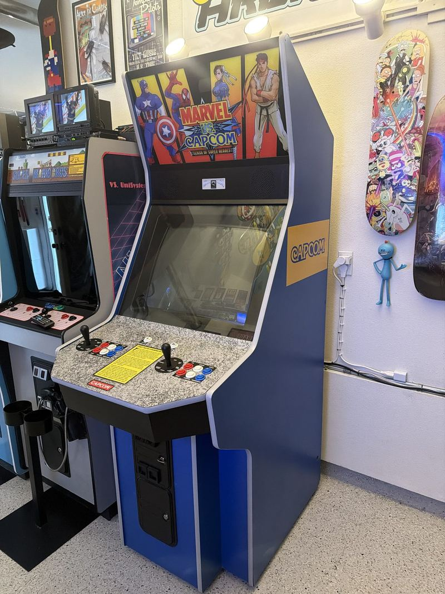

Big Blue
The big American cabinet at the end of the garage row — a Dynamo showcase cab in Capcom colors, rebuilt from the power supply up, running Marvel vs. Capcom on free play.
Not every great arcade cabinet came out of Japan. Through the eighties and nineties, Dynamo built cabinets in Texas for the American market — big, square-shouldered, generously proportioned things designed to take a JAMMA board and a beating in equal measure. Operators loved them because they were serviceable and they lasted. Collectors love them now for the same reason, plus one more: a Dynamo is a canvas. Swap the board, swap the marquee, swap the art, and the cabinet becomes whatever you want it to be.
This one is the biggest machine in the garage arcade and the one people walk toward first. It wears Capcom blue with a gold Capcom decal on the flank, a granite-pattern control panel with two full six-button layouts, and a Marvel vs. Capcom marquee lit up over the top. It goes by Big Blue for reasons nobody has ever needed explained.

What it runs
Marvel vs. Capcom: Clash of Super Heroes, Capcom's 1998 crossover fighter, on CPS-2 hardware. It's the game that let Ryu throw hands with Captain America and somehow made it feel inevitable — two-on-two tag fighting, assists flying, combos that climb the entire height of the screen. Six buttons per player, two joysticks, no coins required.
The sound comes through Capcom's Q-Sound hardware, which is a genuinely strange and wonderful bit of nineties engineering: a positional audio process that widens a two-speaker stage until effects seem to come from outside the cabinet. On a machine this size, with the speakers up in the marquee shroud, it does exactly what Capcom's engineers were hoping for.


The work
Every cabinet in this arcade gets worked on rather than just parked, and Big Blue has had the most attention of any of the uprights. It started where every honest restoration starts — with the power supply. The cabinet's switching supply was fully rebuilt and the voltages trimmed to spec, because nothing else in a cab can be trusted until the rails are clean. Sagging voltage is the ghost behind half the faults people chase for weeks.
Next was the audio. A CPB-001A Q-Sound amplifier had a failing RCA jack, and a reflow brought the soundstage back — a small repair with a disproportionate payoff, which is the most satisfying category of fix there is.
Last came the cosmetics, and the longest wait. Correct Capcom-logo side art is not something you order on a Tuesday; the decal hunt took as long as the electrical work did. When it finally arrived and went on the cabinet, the machine stopped looking like a project and started looking like the centerpiece it is. The full bench log lives on the projects page →
Dynamo
American showcase upright, JAMMA, in the garage arcade.
Marvel vs. Capcom
Clash of Super Heroes, 1998, CPS-2 with Q-Sound audio.
Free play
PSU rebuilt, Q-Sound amp repaired, side art installed.
Big Blue anchors the end of the garage row, next to the VS. UniSystem, Donkey Kong, and the Mario Bros. widebody. See the whole lineup →